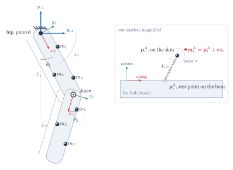

Inverse kinematics of a two-link leg
Model, artefacts and the two estimators, as implemented in the simulation: thigh and shank, hip pinned, knee angle
1The model
Two rigid links, thigh and shank, hinged at the hip and at the knee. Six markers. We want the knee angle.
Everything is planar and in SI units (metres, seconds, radians inside the code; degrees on the sliders and charts). The lab frame \(A\) has its origin at the hip, \(x\) pointing to the right of the screen and \(y\) up (a right leg seen from the person's right: they face \(+x\), so the thigh swings towards \(+x\) in flexion and the shank folds back towards \(-x\)). The hip is a pin: it cannot translate. The knee is a hinge: the shank's proximal end is always at the thigh's distal end.

Reference frames and angles
Each link carries its own frame with the origin at the link's proximal joint and the \(x\)-axis running along the link towards its distal end. A link's orientation in \(A\) is its direction angle \(\varphi\), measured from the lab \(x\)-axis. Rotation matrices carry the slides' frame labels, \(\R^{A}_{T}\) being "the thigh frame \(T\) expressed in \(A\)", and in the plane each one is a rotation by a single angle:
\[\R^{A}_{T} = \R(\varphi_1), \qquad \R(\varphi) \equiv \m{\cos\varphi & -\sin\varphi \\ \sin\varphi & \cos\varphi}, \qquad \R(\varphi)^{-1} = \R(\varphi)^\T = \R(-\varphi). \tag{1.1}\]The joint angles are what a clinician would quote: hip flexion \(\theta_1\) is the angle of the thigh from vertical-down, positive towards \(+x\); knee flexion \(\theta_2\) is the angle by which the shank is folded back from the thigh's line, zero when the leg is straight. In terms of direction angles,
\[\varphi_1 = -\tfrac{\pi}{2} + \theta_1, \qquad \varphi_2 = \varphi_1 - \theta_2. \tag{1.2}\]With the shank, the knee's rotation is the shank frame expressed in the thigh frame, \(\R^{T}_{S} = \R(-\theta_2)\), and the shank in the lab composes the two: \(\R^{A}_{S} = \R^{A}_{T}\,\R^{T}_{S} = \R(\varphi_2)\).
The marker template
Three markers sit on each link at fixed positions in the link's own frame, the template \(\v{l}_i\). They are deliberately not symmetric and not on the link's axis: the frame built from them is attached to the body but is not the body's own symmetry frame. These positions are what a calibration would supply; the simulation assumes that calibration is perfect.
var L1 = 0.42, L2 = 0.40; // m
var W = 0.05; // half-width of the drawn links
// marker positions in each link's own frame: x along the link from its
// proximal joint, y across. Three per link, not collinear.
var TL = [[0.12, 0.052], [0.26, -0.045], [0.33, 0.048]];
var SL = [[0.08, 0.045], [0.20, -0.040], [0.30, 0.042]];| symbol | meaning | in the code |
|---|---|---|
| \(\v{r}^{A}\), \(\v{l}^{T}\), \(\v{l}^{S}\) | a superscript names the frame a vector is expressed in (lab \(A\), thigh \(T\), shank \(S\)) --- the deck's convention. All vectors are columns; the transpose is \(\top\). | |
| \(L_1\), \(L_2\) | link lengths, m | L1, L2 |
| \(\theta_1\), \(\theta_2\) | hip flexion, knee flexion | q[0], q[1] |
| \(\varphi_1\), \(\varphi_2\) | direction angle of the thigh, shank | ps.p1, ps.p2 |
| \(\R^{A}_{T}\), \(\R^{A}_{S}\) | rotation of the thigh frame, shank, as on the slides; \(= \R(\varphi_1)\), \(\R(\varphi_2)\) | rot(ps.p1, ·), rot(ps.p2, ·) |
| \(\v{l}^{T}_i\), \(\v{l}^{S}_i\) | marker \(i\) of the thigh, shank, in its link frame | TL[i], SL[i] |
| \(\v{r}^{A}_{m_i}\) | true, bone-fixed position of marker \(i\) in the lab | bonePoint(k, i, q) |
| \(\v{\rho}^{A}_i\) | rest point of marker \(i\): bone-fixed position plus the skin stretch | restPoint(k, i, q), kept in m.r |
| \(\v{p}^{A}_i\) | actual position of marker \(i\) on the skin | m.p |
| \(\v{m}^{A}_i\) | measured position of marker \(i\): \(\v{p}^{A}_i\) plus camera noise | meas[i] |
| \(\hat{\cdot}\) | an estimate | returned by uik(), cik() |
2Forward kinematics
Forward kinematics maps joint angles to marker positions. For the thigh, whose frame sits on the pinned hip,
\[\v{r}^{A}_{m_i} = \R^{A}_{T}\,\v{l}^{T}_i = \R(\varphi_1)\,\v{l}^{T}_i, \qquad i = 1,2,3. \tag{2.1}\]Read it as the slides' rule for changing frames, \(\v{r}^{A} = \R^{A}_{T}\,\v{r}^{T} + \v{o}^{A}_{T}\), with the thigh's origin \(\v{o}^{A}_{T} = \v{0}\) because the hip is pinned at the lab origin.
The knee is the thigh's distal end, and the shank's markers are placed from there:
\[\begin{aligned} \v{o}^{A}_{S} &= \R^{A}_{T}\m{L_1 \\ 0} = L_1\m{\cos\varphi_1 \\ \sin\varphi_1}, \\ \v{r}^{A}_{m_i} &= \v{o}^{A}_{S} + \R^{A}_{S}\,\v{l}^{S}_i, \qquad \R^{A}_{S} = \R^{A}_{T}\,\R^{T}_{S} = \R(\varphi_2), \qquad i = 4,5,6. \end{aligned} \tag{2.2}\]The knee is where the shank's frame sits in the thigh's: \(\v{o}^{T}_{S} = [L_1, 0]^{\top}\), carried into \(A\) by \(\R^{A}_{T}\). And the shank's orientation composes, exactly as on the slides: the thigh's rotation, then the knee's.
Equations (2.1)–(2.2) are the whole forward model: given \((\theta_1, \theta_2)\), every marker position follows. Note what is baked in — fixed lengths, a hinge knee, a pinned hip. These are exactly the constraints the constrained estimator will exploit, and the assumptions it will be wrong by if the real leg violates them.
function poses(q) { // link direction angles from +x, y up
var p1 = -Math.PI/2 + q[0], p2 = p1 - q[1];
return { p1: p1, p2: p2, knee: [L1*Math.cos(p1), L1*Math.sin(p1)] };
}
function rot(a, v) { var c = Math.cos(a), s = Math.sin(a); return [c*v[0]-s*v[1], s*v[0]+c*v[1]]; }poses implements (1.2) and the knee position of (2.2); rot(a, v) is \(\R(a)\,\v{v}\). Put together, they give the forward kinematics of a marker, \(\v{r}^{A}_{m_i}\):
function bonePoint(k, i, q) {
var ps = poses(q);
if (k === 0) return rot(ps.p1, TL[i]);
var r = rot(ps.p2, SL[i]);
return [ps.knee[0] + r[0], ps.knee[1] + r[1]];
}This is the point the markers would sit at if skin did not move. You will meet the same calculation a second time in modelMarkers (§9): the constrained estimator needs these positions and their derivatives with respect to the joint angles, so that function repeats the rotate-and-add of bonePoint inline and builds the derivatives from the same rotations as it goes, rather than calling bonePoint.
3The true motion
The joint angles are driven, not simulated dynamically: the simulation prescribes smooth trajectories and the question is only how well they can be recovered from the markers. Each angle is a sum of two sinusoids whose frequencies are not simple multiples of one another, so the motion never exactly repeats, with amplitudes and a cadence (0.9 Hz) in the range of walking:
\[\begin{aligned} \theta_1(t) &= 22^\circ \sin(2\pi\,0.9\,t) + 7^\circ \sin(2\pi\,0.37\,t + 1),\\ \theta_2(t) &= \max\!\big(0,\; 28^\circ + 26^\circ \sin(2\pi\,0.9\,t - 0.7) + 7^\circ \sin(2\pi\,0.53\,t)\big). \end{aligned} \tag{3.1}\]The speed slider scales how fast \(t\) advances per displayed frame (§7), so it changes velocities and accelerations without changing the path.
function truth(t) {
var th1 = D2R*(22*Math.sin(2*Math.PI*0.9*t) + 7*Math.sin(2*Math.PI*0.37*t + 1.0));
var th2 = D2R*(28 + 26*Math.sin(2*Math.PI*0.9*t - 0.7) + 7*Math.sin(2*Math.PI*0.53*t));
if (th2 < 0) th2 = 0;
return [th1, th2];
}4Skin artefact I: stretch with the joint angle
The larger part of soft-tissue artefact in walking is not inertial at all. It is deterministic: as a joint flexes, the skin and muscle over the neighbouring segments slide and stretch, and the markers go with them. The simplest model of this, and the one the simulation uses, is that the displacement is linear in the joint angle, and nothing more: a marker's rest point is displaced along its link by an amount proportional to the flexion of the joint under study:
\[\v{\rho}^{A}_i = \v{r}^{A}_{m_i} + g\,a_i\,\theta_2\m{\cos\varphi \\ \sin\varphi}, \tag{4.1}\]where \(\v{r}^{A}_{m_i}\) is the bone point of §2, \((\cos\varphi, \sin\varphi)\) is the link's direction, \(\theta_2\) is in degrees, \(a_i\) is a per-marker slope in mm per degree, and \(g\) is the gain slider (0 switches the effect off, so \(\v{\rho}^{A}_i = \v{r}^{A}_{m_i}\); 1 gives the slopes below). The slopes grow towards the knee, where the skin moves most:
var TA = [0.15, 0.30, 0.45]; // mm per degree
var SA = [-0.25, -0.15, -0.10];function restPoint(k, i, q) {
var ps = poses(q), jt = mode === "leg" ? q[1] : q[0];
var slide = P.slide*(k === 0 ? TA[i] : SA[i])*(jt/D2R)*1e-3;
var ang = k === 0 ? ps.p1 : ps.p2, b = bonePoint(k, i, q);
return [b[0] + slide*Math.cos(ang), b[1] + slide*Math.sin(ang)];
}5Skin artefact II: the wobbling mass
Markers are stuck to skin, and skin is not bone. When the segment accelerates, the soft tissue (and the marker on it) lags and overshoots. A simple model of this, and a common one, is the wobbling mass: the marker is a point mass tied to its rest point \(\v{\rho}^{A}_i\) of §4 by a spring and a damper. The stiffness and damping are set by the sliders.
The stiffness and damping matrices are diagonal in the link frame, because skin is held differently along a limb than across it. With unit mass, the equation of motion of marker \(i\) on a link of direction angle \(\varphi\) is
\[\ddot{\v{p}}^{A}_i = -\R(\varphi)\,\v{K}\,\R(\varphi)^\T (\v{p}^{A}_i - \v{\rho}^{A}_i) -\R(\varphi)\,\v{C}\,\R(\varphi)^\T (\dot{\v{p}}^{A}_i - \dot{\v{\rho}}^{A}_i), \tag{5.1}\] \[\begin{aligned} \v{K} &= \m{k_a & 0 \\ 0 & k_x}, & k_a &= (2\pi f_{along})^2, & k_x &= (2\pi f_{across})^2; \\ \v{C} &= \m{c_a & 0 \\ 0 & c_x}, & c_a &= 2\zeta\,(2\pi f_{along}), & c_x &= 2\zeta\,(2\pi f_{across}). \end{aligned} \tag{5.2}\]The sliders set the two undamped natural frequencies and one damping ratio \(\zeta\); (5.2) converts them to stiffness and damping per unit mass. The rotation by \(\R(\varphi)^\T\) takes the offset and the relative velocity into the link frame, the diagonal matrices act there, and \(\R(\varphi)\) brings the force back to the lab. The damper acts on the velocity relative to the rest point, so a marker on a link moving at constant velocity feels no drag.
Integration
(5.1) is a second-order differential equation for each marker, and the simulation has to step it forward in time. It does so in the simplest possible way. Writing \(\v{v}^{A}_i\) for the marker's velocity, (5.1) says what the acceleration \(\ddot{\v{p}}^{A}_i\) is right now; over a short interval \(\delta t\) we take the velocity to change by acceleration \(\times\, \delta t\), and the position to change by velocity \(\times\, \delta t\). That is Euler's method, the first thing anyone tries for a differential equation.
One detail matters. Plain Euler updates position with the old velocity, and for a spring that is a bad choice: the energy of the oscillation creeps up a little every step and the marker ends up swinging more and more. Updating the velocity first and then moving the position with the new velocity costs nothing extra and does not have that defect — the oscillation keeps its amplitude. This variant is called the semi-implicit Euler method (the name only records that one half of the update uses the updated value). The step is taken ten times per displayed frame so that even the stiffest spring on the slider (25 Hz, a period of 40 ms) is sampled some 24 times per cycle. The rest-point velocity \(\dot{\v{\rho}}^{A}_i\) is taken as the change in \(\v{\rho}^{A}_i\) over the last sub-step divided by \(\delta t\). At \(t=0\) every marker starts on its rest point, at rest.
\[\v{v}^{A}_i \leftarrow \v{v}^{A}_i + \ddot{\v{p}}^{A}_i\,\delta t, \qquad \v{p}^{A}_i \leftarrow \v{p}^{A}_i + \v{v}^{A}_i\,\delta t, \qquad \delta t = \tfrac{1}{10}\cdot\tfrac{\text{speed}}{60}\ \text{s}. \tag{5.3}\]Euler's method and its limitations are the opening of any treatment of ordinary differential equations; see the further reading at the end, or the Wikipedia entry for the semi-implicit Euler method.
function initMarkers() {
mk = [];
var q = truth(0);
for (var k = 0; k < (mode === "leg" ? 2 : 1); k++) for (var i = 0; i < 3; i++) {
var r = restPoint(k, i, q);
mk.push({ k: k, i: i, p: r.slice(), v: [0,0], r: r.slice() });
}
}
function stepMarkers(t, dt) {
var q = truth(t), ps = poses(q);
var ka = Math.pow(2*Math.PI*P.fa, 2), kx = Math.pow(2*Math.PI*P.fx, 2);
var ca = 2*P.zeta*2*Math.PI*P.fa, cx = 2*P.zeta*2*Math.PI*P.fx;
mk.forEach(function (m) {
var r = restPoint(m.k, m.i, q);
var rv = [(r[0]-m.r[0])/dt, (r[1]-m.r[1])/dt]; // rest-point velocity
m.r = r;
var ang = m.k === 0 ? ps.p1 : ps.p2;
var d = rot(-ang, [m.p[0]-r[0], m.p[1]-r[1]]); // offset, link frame
var w = rot(-ang, [m.v[0]-rv[0], m.v[1]-rv[1]]); // relative velocity
var f = rot(ang, [-ka*d[0] - ca*w[0], -kx*d[1] - cx*w[1]]);
m.v[0] += f[0]*dt; m.v[1] += f[1]*dt; // semi-implicit Euler
m.p[0] += m.v[0]*dt; m.p[1] += m.v[1]*dt;
});
}6Measurement noise
A camera system reports each marker with a random error that is, to a good approximation, independent between markers, between frames and between axes, with zero mean. The simulation adds exactly that:
\[\v{m}^{A}_i = \v{p}^{A}_i + \sigma\,\v{\varepsilon}_i, \qquad \v{\varepsilon}_i \sim \mathcal{N}(\v{0}, \v{I}_2), \tag{6.1}\]Note that it is \(\v{p}^{A}_i\), the marker where it actually is on the skin (§4–5), that is measured — not the bone point \(\v{r}^{A}_{m_i}\) of §2. The two coincide only when both artefact sliders are at zero; otherwise the cameras faithfully report a marker that is itself in the wrong place. Here \(\sigma\) is the noise slider in millimetres, drawn afresh for every marker on every frame. A computer's random-number generator gives uniform numbers; to turn two of them into a Gaussian one, the code uses the Box–Muller transform: for \(u, v\) uniform on \((0,1)\), \(\sqrt{-2\ln u}\,\cos 2\pi v\) is a standard normal sample.
function gauss() {
var u = 1 - Math.random(), v = Math.random();
return Math.sqrt(-2*Math.log(u))*Math.cos(2*Math.PI*v);
}
function measure() { // what the cameras report
var s = P.noise*1e-3;
return mk.map(function (m) { return [m.p[0] + s*gauss(), m.p[1] + s*gauss()]; });
}7One frame of the simulation
The browser calls tick() once per displayed frame, 60 times a second. Each call advances the simulation by \(\Delta t = \text{speed}/60\) s and does the following, in this order:
- Advance the world, in ten sub-steps. For each sub-step of \(\delta t = \Delta t / 10\): evaluate the true joint angles at the current time from (3.1); from them compute every marker's bone point (§2) and rest point (§4); move every marker on the skin by one step of the wobbling-mass equation (5.1)–(5.3); advance the clock by \(\delta t\). After ten sub-steps the clock has moved by \(\Delta t\) and the markers have followed the bone with whatever lag the springs impose. (If the simulation is paused, or the speed is zero, this step is skipped and nothing moves.)
- Measure. Call
measure()once: for each of the 6 markers, take its current position on the skin \(\v{p}^{A}_i\) and add fresh Gaussian noise of standard deviation \(\sigma\) to each coordinate (§6). The result,meas, is the only thing the estimators are ever shown. - Record the truth for this instant: the joint angles
q = truth(t). This is what the estimates will be compared with. The estimators do not see it. - Unconstrained estimate.
uik(meas): build each link's frame from its own three markers (§8, Step A), then take the knee angle as the difference of the two orientations and record the knee gap (Steps B–C). - Constrained estimate.
cik(meas): starting from the previous frame's answer, run Gauss–Newton on all 6 markers at once (§9) to get \(\hat{\v{q}}\). - Store and draw. Append \(\{t,\ \text{truth},\ \text{unconstrained},\ \text{constrained},\ \text{gap}\}\) to the history, drop anything older than the 8 s window, redraw the leg and the charts, and ask the browser for the next frame.
Two consequences of this ordering are worth noticing. The artefact is applied before the noise, as in §4–6, so the measurement is noise on top of a marker that may already be in the wrong place. And both estimators see the same measurement each frame, so the comparison between them is never confounded by different noise draws.
var t = 0, paused = false, SUB = 10, FPS = 60;
var hist = []; // {t, tru:[th1,th2], u:[..], c:[..], gap}
var WIN = 8; // seconds shown
var last = null;
function tick() {
var dt = (1/FPS)*P.speed;
if (!paused && P.speed > 0) {
for (var s = 0; s < SUB; s++) { stepMarkers(t, dt/SUB); t += dt/SUB; }
}
var meas = measure(), q = truth(t), U = uik(meas), K = cik(meas);
last = { meas: meas, q: q, U: U, K: K };
if (!paused && P.speed > 0) {
hist.push({ t: t, tru: q, u: [U.th1, U.th2], c: [K.th1, K.th2], gap: U.gap, hip: Math.hypot(U.T.o[0], U.T.o[1]) });
while (hist.length && hist[0].t < t - WIN) hist.shift();
}
draw();
requestAnimationFrame(tick);The estimators see only meas. They are also given the marker templates \(\v{l}_i\) and, for the constrained estimator, the link lengths and the pinned hip — that is, the simulation assumes a perfect calibration. The error you see is therefore entirely due to noise and artefact, never to a wrong model of the subject.
8Unconstrained inverse kinematics
The unconstrained estimator treats each link as an independent rigid body: from the link's three measured markers alone, find the link's pose in the lab — its rotation \(\hat{\R}^{A}_{B} = \R(\hat\varphi)\) and origin \(\hat{\v{o}}^{A}_{B}\), \(B\) being \(T\) or \(S\) — with no reference to any other link or joint. The joint angle then comes from the two poses.
Step A — the pose of one link from its markers
Two ways to do it are provided; the radio button chooses. Whichever is chosen, Step A is carried out twice, once per link, and the two runs are completely independent: the thigh's pose is found from the thigh's three markers \(\v{m}^{A}_{1,2,3}\) with the thigh template \(\v{l}^{T}_i\), and the shank's from \(\v{m}^{A}_{4,5,6}\) with \(\v{l}^{S}_i\). Neither run knows the other exists; nothing ties the shank's origin to the thigh's far end. Below, \(\v{l}_i\), \(\hat\varphi\) and \(\hat{\v{o}}\) refer to whichever link is in hand, and linkPose is simply called twice.
First, what is being looked for. The template \(\v{l}_i\) says where each marker sits relative to the link's own origin, in the link's own frame. If the link were turned by \(\varphi\) and its origin were at \(\v{o}\) in the lab, marker \(i\) would be at \(\R(\varphi)\,\v{l}_i + \v{o}\) — the slides' rule for changing frames. The unknowns are therefore the link's angle \(\varphi\) and the lab position \(\v{o}\) of its origin — the hip for the thigh, the knee for the shank; the data are the three measured \(\v{m}^{A}_i\). Nothing tells the estimator where the origin is beforehand — it must work that out from the markers too.
A1, the lecture's construction. Use the first two markers only. The measured direction from \(\v{m}^{A}_1\) to \(\v{m}^{A}_2\), compared with the same direction in the template, gives the rotation. The origin then follows from marker 1 alone: it must be wherever the rotated template puts \(\v{l}_1\) onto the measured \(\v{m}^{A}_1\):
\[\hat{\varphi} = \operatorname{atan2}(\v{m}^{A}_2 - \v{m}^{A}_1) - \operatorname{atan2}(\v{l}_2 - \v{l}_1), \qquad \hat{\v{o}} = \v{m}^{A}_1 - \R(\hat{\varphi})\,\v{l}_1. \tag{8.1}\]This is exactly the three-marker frame of the slides collapsed to the plane: \(\v{x}_B\) along \(m_1 \to m_2\), origin at \(m_1\). The third marker is not used at all, which is why this variant is noisier than it needs to be.
A2, least-squares rigid fit. Use all three. For any candidate \((\varphi, \v{o})\), each marker has a mismatch \(\v{m}^{A}_i - \R(\varphi)\,\v{l}_i - \v{o}\) between where it was measured and where the candidate pose would put it. We want the pose that makes the three mismatches as small as possible together — the smallest sum of squared lengths (the sum runs over one link's three markers only; it is solved once for the thigh and once, separately, for the shank):
\[\min_{\varphi,\,\v{o}} \sum_{i=1}^{3} \big\| \v{m}^{A}_i - \R(\varphi)\,\v{l}_i - \v{o} \big\|^2. \tag{8.2}\]Setting the derivative with respect to \(\v{o}\) to zero shows that the optimal translation maps the template centroid onto the measured centroid, \(\hat{\v{o}} = \bar{\v{m}}^{A} - \R(\hat\varphi)\,\bar{\v{l}}\). Substituting back, with centred coordinates \(\v{a}_i = \v{l}_i - \bar{\v{l}}\) and \(\v{b}_i = \v{m}^{A}_i - \bar{\v{m}}^{A}\), the problem reduces to maximising \(\sum_i \v{b}_i^\T \R(\varphi)\,\v{a}_i = S_c \cos\varphi + S_s \sin\varphi\), where
\[S_c = \sum_i \v{a}_i \cdot \v{b}_i = \sum_i (a_{ix} b_{ix} + a_{iy} b_{iy}), \qquad S_s = \sum_i \v{a}_i \times \v{b}_i = \sum_i (a_{ix} b_{iy} - a_{iy} b_{ix}), \tag{8.3}\]whose maximum over \(\varphi\) is at
\[\hat{\varphi} = \operatorname{atan2}(S_s,\, S_c), \qquad \hat{\v{o}} = \bar{\v{m}}^{A} - \R(\hat{\varphi})\,\bar{\v{l}}. \tag{8.4}\]The three steps from (8.2) to (8.4) — eliminating \(\v{o}\), reducing to a maximisation over \(\varphi\), and solving it — are worked through line by line in Appendix A. Closed form, no iteration: in two dimensions the best-fit rotation is a single atan2.
This task — lay one set of points over another as well as possible using only a rotation and a translation — is a standard problem with a name, the Procrustes problem. In two dimensions a rotation has a single angle, which is why the answer collapses to one atan2. In three dimensions a rotation has three, so that last step cannot be done with an atan2; instead the \(3\times3\) matrix \(\sum_i \v{b}_i\v{a}_i^\top\) is factorised (its singular-value decomposition) and the rotation is read off the factors. That three-dimensional version is usually called the Kabsch algorithm, and it is what motion-capture software runs. Everything up to that last step is the same.
function linkPose(meas, tmpl) {
var ang, o;
if (method === "two") {
// the lecture's construction: x along m1 -> m2, origin from m1
ang = Math.atan2(meas[1][1]-meas[0][1], meas[1][0]-meas[0][0])
- Math.atan2(tmpl[1][1]-tmpl[0][1], tmpl[1][0]-tmpl[0][0]);
var r0 = rot(ang, tmpl[0]);
o = [meas[0][0]-r0[0], meas[0][1]-r0[1]];
} else {
// least-squares rigid fit of all three (2-D Procrustes)
var cm = [0,0], ct = [0,0], i;
for (i = 0; i < 3; i++) { cm[0]+=meas[i][0]/3; cm[1]+=meas[i][1]/3; ct[0]+=tmpl[i][0]/3; ct[1]+=tmpl[i][1]/3; }
var sx = 0, sy = 0;
for (i = 0; i < 3; i++) {
var a = [tmpl[i][0]-ct[0], tmpl[i][1]-ct[1]], b = [meas[i][0]-cm[0], meas[i][1]-cm[1]];
sx += a[0]*b[0] + a[1]*b[1]; sy += a[0]*b[1] - a[1]*b[0];
}
ang = Math.atan2(sy, sx);
var rc = rot(ang, ct);
o = [cm[0]-rc[0], cm[1]-rc[1]];
}
return { ang: ang, o: o };
}Step B — joint angles from the two poses
With the thigh pose \((\hat{\R}^{A}_{T}, \hat{\v{o}}^{A}_{T})\), i.e. \(\hat\varphi_1\) and \(\hat{\v{o}}_T\), and the shank pose \((\hat{\R}^{A}_{S}, \hat{\v{o}}^{A}_{S})\) likewise, the knee's rotation is \(\hat{\R}^{T}_{S} = \hat{\R}^{A\top}_{T}\hat{\R}^{A}_{S} = \R(\hat\varphi_2 - \hat\varphi_1)\) — the slides' \(\R^{B_p}_{B_d} = \R^{A\top}_{B_p}\R^{A}_{B_d}\) — so, inverting (1.2):
\[\hat\theta_1 = \hat\varphi_1 + \tfrac{\pi}{2}, \qquad \hat\theta_2 = \hat\varphi_1 - \hat\varphi_2. \tag{8.5}\]Both differences must be wrapped into \((-\pi, \pi]\). At deep flexion the shank's direction angle sits near \(-180^\circ\), and atan2 jumps from \(-180^\circ\) to \(+180^\circ\) there, so a little noise can flip its answer by \(360^\circ\) for a frame; without wrapping, that lands in the knee angle. The wrap is \(\operatorname{atan2}(\sin a, \cos a)\).
Step C — the knee gap
Nothing in Steps A–B says the two links meet. The thigh's reconstruction puts the knee at \(\hat{\v{o}}_T + \R(\hat\varphi_1)\,[L_1, 0]^\T\); the shank's puts it at \(\hat{\v{o}}_S\). The distance between them,
\[\text{gap} = \big\| \hat{\v{o}}_T + \R(\hat\varphi_1)\m{L_1\\0} - \hat{\v{o}}_S \big\|, \tag{8.6}\]is reported and charted. It is a direct, physical measure of how much the unconstrained reconstruction violates the anatomy — a real leg's gap is zero.
function wrap(a) { return Math.atan2(Math.sin(a), Math.cos(a)); }
function uik(meas) {
var T = linkPose(meas.slice(0,3), TL);
if (mode === "thigh") {
// the hip is pinned at the origin; where does the thigh's frame put it?
return { th1: wrap(T.ang + Math.PI/2), th2: NaN, T: T, S: null, gap: Math.hypot(T.o[0], T.o[1]) };
}
var S = linkPose(meas.slice(3,6), SL);
// atan2 angles can straddle +-pi (the shank points near -180 degrees at deep
// flexion), so the differences must be wrapped or a frame jumps by 360
var th1 = wrap(T.ang + Math.PI/2), th2 = wrap(T.ang - S.ang);
var kneeT = [T.o[0] + L1*Math.cos(T.ang), T.o[1] + L1*Math.sin(T.ang)];
var gap = Math.hypot(kneeT[0]-S.o[0], kneeT[1]-S.o[1]);
return { th1: th1, th2: th2, T: T, S: S, gap: gap };
}9Constrained inverse kinematics
In §8 each link was fitted on its own and could take any rigid pose: its angle and its origin were both unknowns (three per link, six in all), and nothing kept the links together. Here the origins are not unknowns at all — the thigh's is pinned at the hip, and the shank's is wherever the thigh's far end is, \(L_1\) along it. The only unknowns left are the joint angles \(\theta_1\) and \(\theta_2\), all 6 markers enter one fit, and the pose that comes out is always one the model can reach. That is what "constrained" means.
So "unconstrained" in §8 never meant that no least squares was involved. It meant that each link was free to sit wherever its own three markers put it.
The constrained estimator starts from the forward model of §2 — which already contains the pinned hip, the fixed link lengths and the hinge knee — and asks for the joint angles \(\v{q} = (\theta_1, \theta_2)\) that best explain all the measured markers at once. It is a nonlinear least-squares problem in \(\v{q}\):
\[\hat{\v{q}} = \arg\min_{\v{q}} E(\v{q}), \qquad E(\v{q}) = \sum_{i=1}^{6} \big\| \v{m}^{A}_i - \hat{\v{r}}^{A}_i(\v{q}) \big\|^2, \tag{9.1}\]where \(\hat{\v{r}}^{A}_i(\v{q})\) is the forward model (2.1)–(2.2) evaluated at \(\v{q}\): where marker \(i\) would be if the joint angles were \(\v{q}\). The constraints are never written down as constraints; they are satisfied automatically because the only thing the estimator can vary is \(\v{q}\).
Step A — the model markers and their Jacobian
(9.1) cannot be solved in one shot, because the model markers depend on the angles through sines and cosines. The standard way to minimise a sum of squares like this is the Gauss–Newton method: guess \(\v{q}\), pretend the model is linear near that guess, solve the resulting linear least-squares problem for a correction, apply it, and repeat until the correction is negligible. It needs \(\hat{\v{r}}^{A}_i(\v{q})\) and its derivative with respect to each joint angle. The one derivative rule required is that of a rotated vector with respect to its angle,
\[\frac{\partial}{\partial \varphi}\,\R(\varphi)\,\v{l} = \R\!\left(\varphi + \tfrac{\pi}{2}\right)\v{l}, \tag{9.2}\]i.e. the same vector turned a quarter turn — which is why the code rotates by ps.p1 + Math.PI/2. With \(\partial\varphi_1/\partial\theta_1 = 1\), \(\partial\varphi_2/\partial\theta_1 = 1\) and \(\partial\varphi_2/\partial\theta_2 = -1\) from (1.2), the Jacobian rows are:
The first term of (9.4) is the knee moving with the thigh; the second is the shank marker swinging about the knee. Each \(\v{J}_i\) is a \(2\times 2\) matrix (two coordinates, two angles). Where (9.2) comes from, and how (9.3)–(9.4) follow from it by the chain rule, is worked out in Appendix B.
function modelMarkers(q) {
var ps = poses(q), out = [], J = [], i;
for (i = 0; i < 3; i++) { // thigh: r = R(p1) l, p1 = th1 - pi/2
var r = rot(ps.p1, TL[i]), dr = rot(ps.p1 + Math.PI/2, TL[i]);
out.push(r); J.push([dr, [0,0]]);
}
for (i = 0; i < 3; i++) { // shank: r = knee + R(p2) l, p2 = p1 - th2
var s = rot(ps.p2, SL[i]), dk = rot(ps.p1 + Math.PI/2, [L1, 0]), ds = rot(ps.p2 + Math.PI/2, SL[i]);
out.push([ps.knee[0]+s[0], ps.knee[1]+s[1]]);
J.push([[dk[0]+ds[0], dk[1]+ds[1]], [-ds[0], -ds[1]]]);
}
return { r: out, J: J };
}Step B — one Gauss–Newton iteration
Linearise the model about the current guess \(\v{q}\): \(\hat{\v{r}}^{A}_i(\v{q} + \v{\delta}) \approx \hat{\v{r}}^{A}_i(\v{q}) + \v{J}_i\,\v{\delta}\). With the residuals \(\v{e}_i = \v{m}^{A}_i - \hat{\v{r}}^{A}_i(\v{q})\), the cost (9.1) becomes an ordinary linear least-squares problem in \(\v{\delta}\). Setting its derivative with respect to \(\v{\delta}\) to zero gives a small linear system — the normal equations of least squares — and its solution is the correction:
\[\Big(\sum_i \v{J}_i^\T \v{J}_i\Big)\v{\delta} = \sum_i \v{J}_i^\T \v{e}_i, \qquad \v{q} \leftarrow \v{q} + \v{\delta}. \tag{9.5}\]Here \(\sum \v{J}_i^\T\v{J}_i\) is \(2\times2\) and symmetric, so (9.5) is two equations in two unknowns and is solved directly with the usual determinant formula — that is what the det, d1, d2 lines do. The loop accumulates the four entries of the matrix and the two of the right-hand side over the six markers, solves, updates, and repeats.
Step C — starting point and stopping
The iteration starts from the previous frame's answer rather than from scratch (the motion is continuous, so the previous answer is already close — a "warm start"), runs at most six times, and stops early when the update falls below \(10^{-7}\) rad. In practice one or two iterations suffice. The estimated angles are read directly from \(\hat{\v{q}}\): no wrapping is needed, because \(\v{q}\) is a continuous variable that is nudged, never recomputed from an atan2.
function cik(meas) {
var q = qc.slice();
if (mode === "thigh") {
// one unknown, theta1: the thigh pivots on the pinned hip
for (var k = 0; k < 6; k++) {
var mt = modelMarkers(q), a = 0, g = 0;
for (var i = 0; i < 3; i++) {
var e = [meas[i][0]-mt.r[i][0], meas[i][1]-mt.r[i][1]], j = mt.J[i][0];
a += j[0]*j[0]+j[1]*j[1]; g += j[0]*e[0]+j[1]*e[1];
}
var d = g/a; q[0] += d; if (Math.abs(d) < 1e-7) break;
}
qc = q; return { th1: q[0], th2: NaN };
}
for (var it = 0; it < 6; it++) {
var mm = modelMarkers(q), A = [[0,0],[0,0]], b = [0,0];
for (var i = 0; i < 6; i++) {
var e = [meas[i][0]-mm.r[i][0], meas[i][1]-mm.r[i][1]], j1 = mm.J[i][0], j2 = mm.J[i][1];
A[0][0] += j1[0]*j1[0]+j1[1]*j1[1]; A[0][1] += j1[0]*j2[0]+j1[1]*j2[1];
A[1][1] += j2[0]*j2[0]+j2[1]*j2[1];
b[0] += j1[0]*e[0]+j1[1]*e[1]; b[1] += j2[0]*e[0]+j2[1]*e[1];
}
A[1][0] = A[0][1];
var det = A[0][0]*A[1][1] - A[0][1]*A[1][0]; if (Math.abs(det) < 1e-12) break;
var d1 = ( A[1][1]*b[0] - A[0][1]*b[1])/det, d2 = (-A[1][0]*b[0] + A[0][0]*b[1])/det;
q[0] += d1; q[1] += d2;
if (Math.abs(d1) + Math.abs(d2) < 1e-7) break;
}
qc = q;
return { th1: q[0], th2: q[1] };
}10What to expect, and why
Set one error source at a time and read the RMS error of the knee angle in the readout. The behaviour follows from the models above, not from anything hidden:
| error source | unconstrained | constrained | why |
|---|---|---|---|
| Gaussian noise only | larger; A1 worse than A2 | smallest | Noise is independent and zero-mean. The constrained fit averages it over all 6 markers; A2 averages over 3; A1 uses 2 and ignores the third. |
| wobbling mass only | about equal | about equal | The cluster lags the bone as a near-rigid unit (§5). It looks like bone motion to both methods; there is nothing to average. |
| skin stretch only | small | larger | The stretch is systematic in the joint angle, so it never averages out. The constrained model can only move joint angles, so it absorbs the displaced markers into the angle estimate. The unconstrained frame is barely affected because the markers slide along the link, which hardly rotates the \(m_1 m_2\) line. |
The practical conclusion, which the simulation itself demonstrates: constraints clean up noise, not skin. In a real laboratory the noise is well under a millimetre and the artefact is ten or more, so the regime where the constrained fit shines is the one that matters least. Its real advantages are elsewhere — a chain that cannot come apart, tolerance of a missing marker, and output that feeds a musculoskeletal model directly — and its real cost is that a joint the model gets wrong is forced to behave as the model says.
AAppendix: deriving the least-squares pose, (8.2) to (8.4)
The problem is: given the template points \(\v{l}_i\) and the measured points \(\v{m}^{A}_i\), \(i = 1,2,3\), find the angle \(\varphi\) and translation \(\v{o}\) that minimise
\[E(\varphi, \v{o}) = \sum_{i=1}^{3} \big\| \v{m}^{A}_i - \R(\varphi)\,\v{l}_i - \v{o} \big\|^2. \tag{A.1}\]Step 1 — the translation, for any angle
Hold \(\varphi\) fixed and differentiate with respect to \(\v{o}\). The derivative of \(\|\v{u}\|^2 = \v{u}^\top\v{u}\) with respect to \(\v{u}\) is \(2\v{u}\), and \(\v{u}_i = \v{m}^{A}_i - \R\v{l}_i - \v{o}\) depends on \(\v{o}\) with a minus sign, so
\[\frac{\partial E}{\partial \v{o}} = -2 \sum_i \big(\v{m}^{A}_i - \R(\varphi)\,\v{l}_i - \v{o}\big) = \v{0} \quad\Longrightarrow\quad 3\,\v{o} = \sum_i \v{m}^{A}_i - \R(\varphi)\sum_i \v{l}_i. \tag{A.2}\]Dividing by 3 and writing \(\bar{\v{m}}^{A} = \tfrac13\sum_i \v{m}^{A}_i\) and \(\bar{\v{l}} = \tfrac13\sum_i \v{l}_i\) for the two centroids,
\[\v{o}^{*}(\varphi) = \bar{\v{m}}^{A} - \R(\varphi)\,\bar{\v{l}}. \tag{A.3}\]In words: whatever the angle, the best translation is the one that carries the template's centroid onto the measured centroid. (\(E\) is a sum of squares in \(\v{o}\), so this stationary point is its minimum.)
Step 2 — eliminate the translation
Put (A.3) back into (A.1). Each term becomes
\[\v{m}^{A}_i - \R\v{l}_i - \bar{\v{m}}^{A} + \R\bar{\v{l}} = \underbrace{(\v{m}^{A}_i - \bar{\v{m}}^{A})}_{\v{b}_i} - \R\,\underbrace{(\v{l}_i - \bar{\v{l}})}_{\v{a}_i}, \tag{A.4}\]so the centred coordinates of §8 appear by themselves, and the translation is gone. What is left is not \(E\) itself but \(E\) evaluated along the curve on which the translation is already optimal for each angle — a function of the angle alone, which deserves its own name:
\[E^{*}(\varphi) \equiv E\big(\varphi, \v{o}^{*}(\varphi)\big) = \sum_i \| \v{b}_i - \R(\varphi)\,\v{a}_i \|^2. \tag{A.5}\]Minimising \(E^{*}\) over \(\varphi\) does give the minimum of \(E\) over both unknowns: for any \(\varphi\), no choice of \(\v{o}\) can beat \(\v{o}^{*}(\varphi)\), so the best pair \((\hat\varphi, \hat{\v{o}})\) must lie on that curve, and along it \(E\) is \(E^{*}\).
Expand the square: \(\|\v{b} - \R\v{a}\|^2 = \|\v{b}\|^2 - 2\,\v{b}^\top\R\v{a} + \|\R\v{a}\|^2\). A rotation does not change a length, so \(\|\R\v{a}_i\|^2 = \|\v{a}_i\|^2\). Therefore
\[E^{*}(\varphi) = \underbrace{\sum_i \|\v{b}_i\|^2 + \sum_i \|\v{a}_i\|^2}_{\text{does not depend on } \varphi} \;-\; 2 \sum_i \v{b}_i^\top \R(\varphi)\,\v{a}_i, \tag{A.6}\]and minimising \(E^{*}\) over \(\varphi\) is the same as maximising \(F(\varphi) = \sum_i \v{b}_i^\top \R(\varphi)\,\v{a}_i\).
Step 3 — write the angle out
With \(\R(\varphi) = \m{\cos\varphi & -\sin\varphi \\ \sin\varphi & \cos\varphi}\) and \(\v{a}_i = (a_{ix}, a_{iy})\),
\[\R(\varphi)\,\v{a}_i = \m{a_{ix}\cos\varphi - a_{iy}\sin\varphi \\ a_{ix}\sin\varphi + a_{iy}\cos\varphi},\] \[\begin{aligned} \v{b}_i^\top \R(\varphi)\,\v{a}_i &= b_{ix}(a_{ix}\cos\varphi - a_{iy}\sin\varphi) + b_{iy}(a_{ix}\sin\varphi + a_{iy}\cos\varphi) \\ &= (a_{ix}b_{ix} + a_{iy}b_{iy})\cos\varphi + (a_{ix}b_{iy} - a_{iy}b_{ix})\sin\varphi. \end{aligned} \tag{A.7}\]The first bracket is the dot product \(\v{a}_i\cdot\v{b}_i\); the second is the two-dimensional cross product \(\v{a}_i\times\v{b}_i\) (a scalar in the plane). Summing over the three markers gives exactly (8.3):
\[F(\varphi) = S_c\cos\varphi + S_s\sin\varphi, \qquad S_c = \sum_i \v{a}_i\cdot\v{b}_i, \quad S_s = \sum_i \v{a}_i\times\v{b}_i. \tag{A.8}\]Step 4 — maximise over the angle
Write the pair \((S_c, S_s)\) in polar form, \(S_c = \rho\cos\psi\), \(S_s = \rho\sin\psi\) with \(\rho = \sqrt{S_c^2 + S_s^2}\) and \(\psi = \operatorname{atan2}(S_s, S_c)\). Then by the cosine addition formula
\[F(\varphi) = \rho\,(\cos\psi\cos\varphi + \sin\psi\sin\varphi) = \rho\cos(\varphi - \psi), \tag{A.9}\]which is largest, equal to \(\rho\), when \(\varphi = \psi\). (Setting \(F'(\varphi) = -S_c\sin\varphi + S_s\cos\varphi = 0\) gives \(\tan\varphi = S_s/S_c\), which has two solutions \(180^\circ\) apart; the \(\operatorname{atan2}\) picks the one where \(F\) is a maximum rather than a minimum.) So
\[\hat{\varphi} = \operatorname{atan2}(S_s,\, S_c), \qquad \hat{\v{o}} = \bar{\v{m}}^{A} - \R(\hat{\varphi})\,\bar{\v{l}}, \tag{A.10}\]the second line being (A.3) evaluated at the best angle. This is (8.4). Note what made it closed-form: in two dimensions a rotation has a single parameter, so the maximisation in Step 4 is of one sinusoid. In three dimensions Steps 1 and 2 go through unchanged, but a rotation then has three parameters, and the maximisation is solved by factorising the \(3\times3\) matrix \(\sum_i \v{b}_i\v{a}_i^\top\) (the Kabsch algorithm mentioned in §8).
BAppendix: deriving the Jacobians, (9.2) to (9.4)
Gauss–Newton needs the derivative of each model marker position with respect to each joint angle. Every marker position in §2 is a rotated template vector, plus a rotated offset for the shank, so one derivative does all the work: that of a rotated vector with respect to its angle.
Step 1 — the derivative of a rotated vector, (9.2)
Take a fixed vector \(\v{l} = (l_x, l_y)\) and rotate it by \(\varphi\):
\[\R(\varphi)\,\v{l} = \m{\cos\varphi & -\sin\varphi \\ \sin\varphi & \cos\varphi}\m{l_x \\ l_y} = \m{l_x\cos\varphi - l_y\sin\varphi \\ l_x\sin\varphi + l_y\cos\varphi}. \tag{B.1}\]Only \(\varphi\) varies, so differentiate each component (the derivative of \(\cos\) is \(-\sin\), of \(\sin\) is \(\cos\)):
\[\frac{\partial}{\partial\varphi}\,\R(\varphi)\,\v{l} = \m{-l_x\sin\varphi - l_y\cos\varphi \\ \phantom{-}l_x\cos\varphi - l_y\sin\varphi}. \tag{B.2}\]Now write out \(\R(\varphi + \tfrac{\pi}{2})\,\v{l}\), using \(\cos(\varphi + \tfrac{\pi}{2}) = -\sin\varphi\) and \(\sin(\varphi + \tfrac{\pi}{2}) = \cos\varphi\):
\[\R\!\left(\varphi + \tfrac{\pi}{2}\right)\v{l} = \m{-\sin\varphi & -\cos\varphi \\ \phantom{-}\cos\varphi & -\sin\varphi}\m{l_x \\ l_y} = \m{-l_x\sin\varphi - l_y\cos\varphi \\ \phantom{-}l_x\cos\varphi - l_y\sin\varphi}. \tag{B.3}\](B.2) and (B.3) are the same vector, which is (9.2). The picture behind it: as \(\varphi\) increases, the tip of \(\R(\varphi)\v{l}\) moves round a circle of radius \(\|\v{l}\|\); its velocity is tangent to that circle, i.e. the vector itself turned a quarter-turn, with the same length. Equivalently \(\frac{\partial}{\partial\varphi}\R(\varphi) = \R(\varphi)\,\v{S}\) with \(\v{S} = \m{0 & -1 \\ 1 & 0}\), the quarter-turn matrix, which is why the code can take any derivative by calling rot with the angle shifted by Math.PI/2.
Step 2 — the thigh markers, (9.3)
From (2.1), \(\hat{\v{r}}^{A}_i(\v{q}) = \R(\varphi_1)\,\v{l}^{T}_i\) with \(\varphi_1 = -\tfrac{\pi}{2} + \theta_1\) from (1.2). The angle depends on the joint angle through \(\varphi_1\), so by the chain rule and \(\partial\varphi_1/\partial\theta_1 = 1\),
\[\frac{\partial \hat{\v{r}}^{A}_i}{\partial\theta_1} = \frac{\partial}{\partial\varphi_1}\big(\R(\varphi_1)\,\v{l}^{T}_i\big)\cdot\frac{\partial\varphi_1}{\partial\theta_1} = \R\!\left(\varphi_1 + \tfrac{\pi}{2}\right)\v{l}^{T}_i \cdot 1. \tag{B.4}\]A thigh marker does not involve \(\theta_2\) at all, so \(\partial\hat{\v{r}}^{A}_i/\partial\theta_2 = \v{0}\). Together these are (9.3).
Step 3 — the shank markers, (9.4)
From (2.2), a shank marker is the knee plus a rotated template vector,
\[\hat{\v{r}}^{A}_i(\v{q}) = \underbrace{\R(\varphi_1)\m{L_1 \\ 0}}_{\text{the knee}} + \R(\varphi_2)\,\v{l}^{S}_i, \qquad \varphi_2 = \varphi_1 - \theta_2 = -\tfrac{\pi}{2} + \theta_1 - \theta_2. \tag{B.5}\]Both angles depend on the joint angles, and the two partial derivatives of \(\varphi_2\) are what carry the signs:
\[\frac{\partial\varphi_1}{\partial\theta_1} = 1, \qquad \frac{\partial\varphi_2}{\partial\theta_1} = 1, \qquad \frac{\partial\varphi_1}{\partial\theta_2} = 0, \qquad \frac{\partial\varphi_2}{\partial\theta_2} = -1. \tag{B.6}\]Derivative with respect to \(\theta_1\). Both terms of (B.5) move, because turning the hip turns the knee's position and the shank's direction together. Apply (9.2) to each, with the chain-rule factors from (B.6):
\[\frac{\partial \hat{\v{r}}^{A}_i}{\partial\theta_1} = \R\!\left(\varphi_1 + \tfrac{\pi}{2}\right)\m{L_1 \\ 0}\cdot 1 + \R\!\left(\varphi_2 + \tfrac{\pi}{2}\right)\v{l}^{S}_i \cdot 1. \tag{B.7}\]Derivative with respect to \(\theta_2\). The knee does not move when only the knee angle changes, so the first term of (B.5) gives nothing; the second gives
\[\frac{\partial \hat{\v{r}}^{A}_i}{\partial\theta_2} = \R\!\left(\varphi_2 + \tfrac{\pi}{2}\right)\v{l}^{S}_i \cdot (-1) = -\R\!\left(\varphi_2 + \tfrac{\pi}{2}\right)\v{l}^{S}_i. \tag{B.8}\](B.7) and (B.8) are (9.4). The minus sign is the sign convention of (1.2): increasing knee flexion turns the shank the other way from increasing hip flexion.
Step 4 — reading the code against the result
In modelMarkers: dr is (B.4); for the shank, dk is the first term of (B.7), ds is the second term, their sum is the \(\theta_1\) column and [-ds[0], -ds[1]] is the \(\theta_2\) column, (B.8). Every call is rot with the angle shifted by Math.PI/2, which is Step 1 applied three times.
11Sources and further reading
The claims in these notes rest on the derivations and the simulation above. The list below is divided into sources — works read and relied on — and further reading, pointers to where a topic is treated in depth, offered without any claim about what they conclude.
Sources
- Uchida, T. K. & Delp, S. L. (2021). Biomechanics of Movement: The Science of Sports, Robotics, and Rehabilitation. MIT Press. — marker-based kinematics, anatomical and tracking frames, and the two estimators (§8–9).
Further reading
- Dumas, R. & Jacquelin, E. (2017). Stiffness of a wobbling mass models analysed by a smooth orthogonal decomposition of the skin movement relative to the underlying bone. Journal of Biomechanics, 62, 47–52. — on wobbling-mass models of soft-tissue artefact (§5).
- Leardini, A., Chiari, L., Della Croce, U. & Cappozzo, A. (2005). Human movement analysis using stereophotogrammetry. Part 3: Soft tissue artifact assessment and compensation. Gait & Posture, 21, 212–225. — a review of soft-tissue artefact (§4–5).
- Cappello, A., Cappozzo, A., La Palombara, P. F., Lucchetti, L. & Leardini, A. (1997). Multiple anatomical landmark calibration for optimal bone pose estimation. Human Movement Science, 16, 259–274. — on artefact compensation (§4).
- Camomilla, V., Cereatti, A., Cheze, L. & Cappozzo, A. (2013). A hip joint kinematics driven model for the generation of realistic thigh soft tissue artefacts. Journal of Biomechanics, 46, 625–630. — on modelling thigh artefact (§4).
- Kabsch, W. (1976). A solution for the best rotation to relate two sets of vectors. Acta Crystallographica A, 32, 922–923; and Horn, B. K. P. (1987). Closed-form solution of absolute orientation using unit quaternions. Journal of the Optical Society of America A, 4, 629–642. — on the three-dimensional rigid fit (§8, Appendix A).
- Lu, T.-W. & O'Connor, J. J. (1999). Bone position estimation from skin marker co-ordinates using global optimisation with joint constraints. Journal of Biomechanics, 32, 129–134. — on constrained inverse kinematics (§9).
- Andersen, M. S., Benoit, D. L., Damsgaard, M., Ramsey, D. K. & Rasmussen, J. (2010). Do kinematic models reduce the effects of soft tissue artefacts in skin marker-based motion analysis? An in vivo study of knee kinematics. Journal of Biomechanics, 43, 268–273. — on joint constraints and soft-tissue artefact (§10).
- Press, W. H., Teukolsky, S. A., Vetterling, W. T. & Flannery, B. P. (2007). Numerical Recipes: The Art of Scientific Computing, 3rd ed. Cambridge University Press. — on random numbers, nonlinear least squares and integrating differential equations (§5, §6, §9). The book's site is numerical.recipes.
- Nocedal, J. & Wright, S. J. (2006). Numerical Optimization, 2nd ed. Springer. — on least-squares methods (§9).